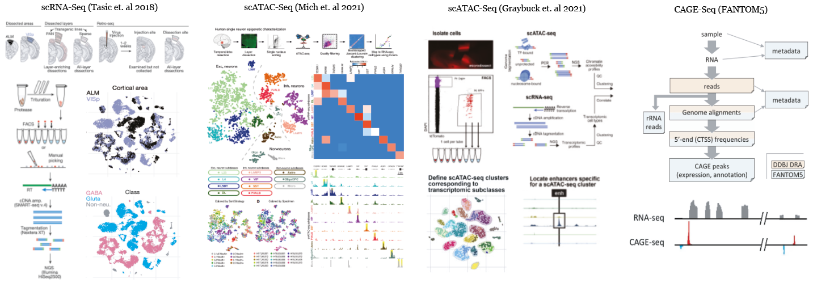

We provide access to processed and analyzed data of human and mouse single cell (scRNA-Seq and scATAC-Seq) from large studies conducted in Allen Institute for Brain Science as well as samples from additional projects such as FANTOM5 for CAGE-Seq. This integrative project has been conducted in collaboration with Sena-Esteves Lab and Bioinformatics Core at UMass Chan Medical School.
In collaboration with Sena-Esteves Lab and Bioinformatics Core at UMass Chan Medical School, this website hosts a browser for interactively visualizing transcriptional profiles of mouse brain cell types, and two publicly accessible custom track hubs (for human and mouse) within UCSC genome browsers.
UCSC Track Hub: The scRNA-Seq, scATAC-Seq and CAGE-Seq reads are individually aligned using predefined pre-processing pipelines. Aligned reads are aggregated for cell types, tissues and regions of interests before transformed into BigWig files. To provide access to these aggregate single cell tracks we are hosting a custom UCSC Track Hub (Mouse and Human).
Cellxgene Browser: The scRNA data on mouse neocortex is analyzed using scRNA downstream analysis package called Seurat. To provide access to the analyzed single cell data, we are hosting an interactive browser based on Cellxgene.
All raw sequencing data (scRNA-Seq, scATAC-Seq and CAGE-Seq) were processed by pipelines developed within the interactive pipeline manager DolphinNext (Yukselen et. al 2020). Metadata as well as the processed datasets are currently being hosted in DolphinSuite, an end-to-end bioinformatics analysis platform.

This study includes gene expression profiles of 23573 mouse neocortex single cells (Tasic et. al 2018) that are collected from either anterior lateral motor cortex (ALM) or primary visual cortex (VISp) of 360 mice donors whose ages are ranging between 51 and 91 days. Cells are isolated into individual wells using fluorescence-activated cell sorting (FACS) or manual picking. The cDNA libraries are generated and amplified using SMART-Seq.
The paired sequencing reads of each individual cell are processed using the scRNA-Seq (Tasic et al 2018) pipeline that aligns and quantifies reads as previously described by (Tasic et. al 2018).
This study includes chromatin accessibility profiles of 3660 human temportal cortex single cells ((Mich et. al 2021) that are collected primarily from the temporal cortex (mostly from middle temporal gyrus) of 14 human donors whose ages are ranging between 19 and 68. Cells are isolated into individual wells using fluorescence-activated cell sorting (FACS) or manual picking.
The paired sequencing reads of each individual cell are processed using the scATAc-Seq (Mich et al 2021) pipeline that aligns and quantifies reads as previously described by (Mich et. al 2021).
This study includes chromatin accessibility profiles of 3602 mouse cortex single cells (Graybuck et. al 2021) that are primarily collected from primary visual cortex (VISp) of 60 mice donors whose ages are ranging between 38 and 81 days. Cells are isolated into individual wells using fluorescence-activated cell sorting (FACS) or manual picking.
The paired sequencing reads of each individual cell are processed using the scATAC-Seq (Graybuck et al 2021) pipeline that aligns and quantifies reads as previously described by (Graybuck et. al 2021).
FANTOM5 project incorporates CAGE sequencing reads from 1016 mouse and 701 human samples. We have primarily aligned CAGE-Seq reads of primary cells (neuronal, astrocyte, microglia etc.) and whole tissue (cerebellum, visual cortex, hippocampus etc.) reads of brain using a custom CAGE-Seq pipeline.